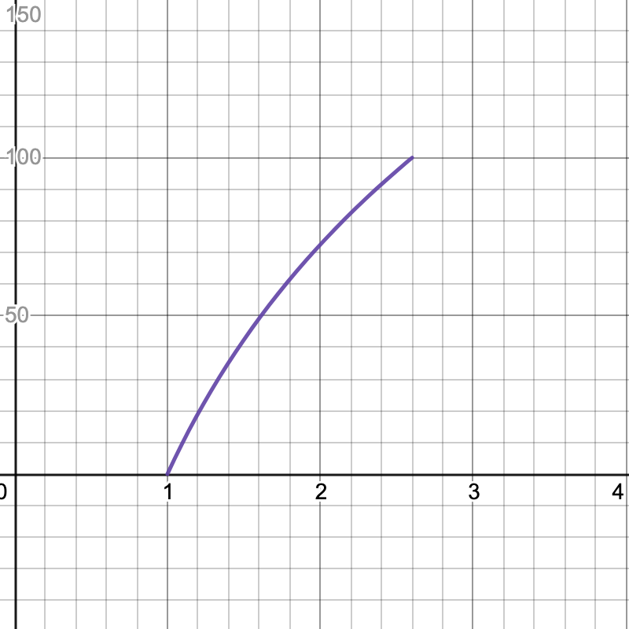

Project 4: Numc
Deadline: Thursday, April 28, 11:59:59 PM PT
In this project, you will write your own simple version of numpy (a Python library for performing mathematical and logical operations on arrays and matrices, whose underlying code is written in C) and optimize your code for performance.
Content in scope for this project: Lectures 18-20, Labs 8-9, Discussions 10-11, Homework 8. Also, make sure you've finished the setup in Lab 0.
Setup: Git
This assignment can be done alone or with a partner.
Warning: Once you create a GitHub repo, you will not be able to change (add, remove, or swap) partners for this project, so please be sure of your partner before starting the project.
If there are extenuating circumstances that require a partner switch (e.g. your partner drops the class, your partner is unresponsive), please reach out to us privately.
-
Visit Galloc. Log in and start the Project 4 assignment. This will create a GitHub repository for your work.
-
Clone the repository on your workspace. Please use the hive machines for this project.
(replace
USERNAMEwith your GitHub username) -
Navigate to your repository:
-
Add the starter repository as a remote:
Setup: Python
-
Create a virtual environment:
-
Activate the virtual environment:
-
Install the requirements:
Every time you (re)connect to the hive, you will need to run source .venv/bin/activate again to activate the virtual environment.
Note: Autograder Ratelimit
Because of performance limitations, the autograder is unable to support too many submissions at once, so we have to limit everyone to 6 submissions every 3 hours. We highly recommend starting early, as the autograder may take longer to run when a lot of students are submitting closer to the deadline.
Task 1: Matrix functions in C
Conceptual Overview: Storing Matrices
Matrices are stored in a matrix struct (already defined for you in src/matrix.h).
The int rows and int cols fields store the number of rows and columns in the matrix.
The double* data field is a pointer to an array storing the elements of the matrix. The elements of the 2-dimensional matrix are stored in row-major order. Recall that row-major order means we each row of the matrix consecutively in memory as a 1-dimensional array.

The int ref_cnt and struct matrix *parent fields are used to support Python slicing. Each time you slice a matrix in Python (e.g. mat[0:2]), the underlying C library will allocate a new matrix struct to keep track of the sliced matrix. int ref_cnt keeps track of how many slices or matrices are referring to this matrix's data, and struct matrix *parent is a pointer to the original matrix struct that this matrix struct was sliced from (or NULL if this matrix is not a slice).
Note that it's not too important to understand slices, parents, and reference counts conceptually for this project. As long as you implement the allocation and deallocation functions (Tasks 1.2-1.4) according to the provided hints, you shouldn't need to work with slices for the rest of the project.
Task 1.1: Get and Set
Fill in the get function in src/matrix.c. This function gets an element from the matrix data at the specified row and column (zero-indexed).
| Arguments | matrix *mat |
A pointer to the matrix struct. |
int row |
The row index of the element to return. | |
int col |
The column index of the element to return. | |
| Return value | double |
The element at the given row and column. |
Fill in the set function in src/matrix.c. This function puts the given value in the matrix data at the specified row and column.
| Arguments | matrix *mat |
A pointer to the matrix struct. |
int row |
The row index of the element to return. | |
int col |
The column index of the element to return. | |
double val |
The value to put in the matrix. | |
| Return values | None | |
For both functions, you can assume that row and col are valid indices.
You will need to finish the functions up to Task 1.3 before testing/debugging these functions.
Task 1.2: Allocate
Fill in the allocate_matrix function in src/matrix.c. This function allocates space for a new matrix struct with the provided number of rows and columns.
| Arguments | matrix **mat |
A pointer to a matrix pointer in memory. |
int rows |
The number of rows to allocate space for. | |
int cols |
The number of columns to allocate space for. | |
| Return value | int |
-1 if either rows or cols is not positive. -2 if allocating memory failed. 0 otherwise. |
Hint: Follow these steps.
- Check if the dimensions are valid. Return -1 if either dimension is not positive.
- Allocate space for the new matrix struct. Return -2 if allocating memory failed.
- Allocate space for the matrix data, initializing all entries to be 0. Return -2 if allocating memory failed.
- Set the number of rows and columns in the matrix struct according to the arguments provided.
- Set the
parentfield to NULL, since this matrix was not created from a slice. - Set the
ref_cntfield to 1. - Store the address of the allocated matrix struct at the location
matis pointing at. - Return 0 upon success.
You will need to finish the functions up to Task 1.3 before testing/debugging these functions.
Task 1.3: Deallocate
Fill in the deallocate_matrix function in src/matrix.c. This function frees a matrix struct and, if no other structs are pointing at the data, frees the data as well.
| Arguments | matrix *mat |
A pointer to a matrix struct to be deallocated. |
| Return values | None | |
Hint: Follow these steps.
- If the matrix pointer
matis NULL, return. - If
mathas no parent: decrement itsref_cntfield by 1. If theref_cntfield becomes 0, then freematand itsdatafield. - Otherwise, recursively call
deallocate_matrixonmat's parent, then freemat.
Before continuing, we recommend testing and debugging your functions so far. Refer to the testing and debugging section for detailed instructions.
Task 1.4: Allocate Reference
Fill in the allocate_matrix_ref function in src/matrix.c. This function allocates space for a matrix struct created by slicing an existing matrix struct.
| Arguments | matrix **mat |
A pointer to a matrix pointer in memory. |
matrix *from |
A pointer to the matrix whose data we are slicing. | |
int offset |
The entry in the from matrix where we start slicing the data. |
|
int rows |
The number of rows in the new sliced matrix. | |
int cols |
The number of columns in the new sliced matrix. | |
| Return value | int |
-1 if either rows or cols is not positive. -2 if allocating memory failed. 0 otherwise. |
Hint: Follow these steps.
- Check if the dimensions are valid. Return -1 if either dimension is not positive.
- Allocate space for the new matrix struct. Return -2 if allocating memory failed.
- Set the
datafield of the new struct to be thedatafield of thefromstruct plusoffset. - Set the number of rows and columns in the new struct according to the arguments provided.
- Set the
parentfield of the new struct to thefromstruct pointer. - Increment the
ref_cntfield of thefromstruct by 1. - Store the address of the allocated matrix struct at the location
matis pointing at. - Return 0 upon success.
Task 1.5: Basic Matrix Operations
Fill in the fill_matrix, abs_matrix, and add_matrix functions in src/matrix.c.
Optionally, you can also fill in sub_matrix and neg_matrix (not worth any points, just for fun). If you choose not to implement the optional functions, please don't delete them, comment them out, or change the function signatures - just add return 0; in the functions to avoid compiler warnings.
Task 1.6: More Matrix Operations
Fill in the mul_matrix function in src/matrix.c.
Fill in the pow_matrix function in src/matrix.c. This function should multiply the mat matrix by itself repeatedly pow times. We recommend calling mul_matrix within this function. Remember to account for the cases where pow=0 (put the identity matrix in the result matrix) and pow=1 (put the values of the original matrix into the result matrix).
Testing and Debugging
To run the provided CUnit tests, run in the root folder of your project:
This will create an executable called test in the root folder and run it.
By default, CUnit will run these tests in Normal mode. When debugging a specific issue, it may be helpful to switch to Verbose mode, which can be done by commenting and uncommenting the relevant lines in mat_test.c:
// CU_basic_set_mode(CU_BRM_NORMAL);
;
Make sure that one line is uncommented at a time.
Please keep in mind that these tests are not comprehensive, and passing all the sanity tests does not necessarily mean your implementation is correct. This is especially true with the memory functions allocate_matrix, allocate_matrix_ref, and deallocate_matrix. Also keep in mind that the autograder will be using our own set of sanity tests, and will not be running your CUnit tests.
Finally, you are welcomed to modify the tests/mat_test.c file in the tests directory to implement your custom test cases. To add your own custom tests, you will need to define your own test function and possibly use any of the CU_ASSERT_EQUAL, CU_ASSERT_NOT_EQUAL, or CU_ASSERT_PTR_EQUAL CUnit assertions to compare any value that you would like (Suggestion: CUnit has a guide with more assertions. Lastly, you will need to call CU_add_test to the main function to run your newly created function! A good place to start is to look at some of the provided tests and use the general approach to your own specific tests.
Task 2: Speeding up matrix operations
Task 2.1: SIMD Instructions
Modify fill_matrix, abs_matrix, add_matrix, and mul_matrix in src/matrix.c to use SIMD instructions.
Optionally, you can also modify sub_matrix and neg_matrix to use SIMD instructions (not worth any points, just for fun). You don't need to modify pow_matrix to use SIMD instructions, since it calls mul_matrix to perform its operations.
The SIMD instructions in this project work on 256 bits = 4 doubles at a time, so you can use them to perform four operations in parallel.
Here is a list of instructions that you may find helpful, although you are also allowed to use other instructions not on the list.
void __m256d __m256d __m256d __m256d __m256d __m256d __m256d __m256d __m256d __m256d As a reminder, you can use the Intel Intrinsics Guide as a reference to look up the relevant instructions. You will have to use the __m256d type to hold 4 doubles in a YMM register, and then use the _mm256_* intrinsics to operate on them.
After implementing only SIMD instructions, our reference implementation achieves a speedup of approximately 3.10 on mul_matrix and 1.00 on add_matrix and abs_matrix. Note that your speedup might be different depending on your implementation, so don't worry if your speedup doesn't match exactly.
Here are some tips for optimization/common mistakes collected from students this semester:
- To vectorize the dot product (multiplication and addition) operations in matrix multiplication, consider transposing the second matrix so that the elements in a column are located at adjacent memory addresses.
- Cache blocking by splitting the matrix into "tiles" and working on each tile separately is not needed for this project, especially if you're already transposing the entire matrix.
Task 2.2: OpenMP
Use OpenMP to parallelize fill_matrix, abs_matrix, add_matrix, and mul_matrix in src/matrix.c.
Note that you will need to make sure that none of the different threads overwrites each others' data. Just adding a #pragma omp parallel for may cause errors. Here are a few useful links to use as a starting point: Using OpenMP with C and OpenMP Functions.
After implementing SIMD instructions and OpenMP only, our reference implementation achieves a speedup of approximately 12.67 on mul_matrix and 2.68 on add_matrix and abs_matrix. Note that your speedup might be different depending on your implementation, so don't worry if your speedup doesn't match exactly.
Here are some tips for optimization/common mistakes collected from students this semester:
- Avoid using
omp_set_num_threads, because you don't necessarily know the number of threads being used to run your code. - Avoid using nested OpenMP directives. For example, if you have a double for loop, you probably don't want to add
#pragma omp parallel forto both loops, because that would create more threads than you have and cause a lot of unnecessary thread switching. Instead, consider only parallelizing the outermost loop.
Task 2.3: Algorithmic Optimization
Modify pow_matrix in src/matrix.c to use an efficient exponentiation algorithm. An efficient algorithm should be faster than the naive exponentiation algorithm, which requires n calls to mul_matrix to raise a matrix to the nth power. We recommmend repeated squaring.
After implementing algorithmic optimization (in addition to SIMD and OpenMP on mul_matrix), our reference implementation achieves a speedup of approximately 745.5 on pow_matrix. Note that your speedup might be different depending on your implementation, so don't worry if your speedup doesn't match exactly.
Task 2.4: Other Optimizations
If your code is still not passing the performance tests at this point, you can consider some other techniques for speeding up your code.
- Reduce function calls: Function calls are slow because the program must set up a stack frame and jump to a different part of code. If some part of your code is repeatedly calling a function, you could try to reduce the number of times the function is called.
- Loop unrolling: You can manually reduce the number of loop iterations your program needs to execute. See this link for a simple example of loop unrolling.
- Cache blocking: You can rearrange how data is stored in memory to improve locality for better cache performance. For example, accessing a column of data in a row-major matrix requires skipping through elements in the matrix, but if the same matrix were stored in column-major order, the column of data would be located in one continuous block of memory.
Here are some tips for optimization/common mistakes collected from students this semester:
- Avoid using a for loop to initialize allocated memory to 0. Instead, use a built-in function that allocates memory and initializes the memory to 0.
- If you've implemented other matrix operations (e.g. creating an identity matrix, transposing a matrix), consider parallelizing those as well.
Testing and Debugging
We use tests/unittests as the framework for testing and have provided a tests/unittests folder that contains this framework for testing your python module. Here is the official documentation for the standard Python unittest library.
tests/unittests/unittests.py contains all the skeleton code for both correctness and performance tests, and tests/unittests/utils.py has all the functions that you might need in order to write tests. We have provided some sample tests for you, but it is up to you to design and code up the tests. We will not be grading your tests.
We have installed the naive solution which we will be comparing against on hive! The python package is called dumbpy and you can import it like any other python library (so long as you are on hive)! Please note we will not be distributing this binary which means you must work on hive if you want to test with it. You should use this and the time package to determine how much you sped up your code.
To debug your Python tests:
- If you haven't already, activate the virtual environment:
source .venv/bin/activate - If you haven't already, install the requirements:
python3 -m pip install -r requirements.txt - Navigate to your root project 4 directory and run
make install - In the
tests/unittestsdirectory, runcgdb --args python3 -m unittest unittests.py -v
Functions in tests/unittests/utils.py
-
dp_nc_matrix(*args, **kwargs)- This function will return a
dumbpymatrix and anumcmatrix that are identical.*argsand**kwargswill be used as the arguments to instantiate both matrices in the exact same format as you would instantiate anumc.Matrix. We provide some examples below.>>> , = >>> >>> >>> , = >>> >>>
- This function will return a
-
rand_dp_nc_matrix(rows, cols, low=0, high=1, seed=0)- This function will instantiate a random
dumbpymatrix and a randomnumcmatrix withseedwhere each element is in the range [low, high). The two matrices are identical withrowsrows andcols.seedis defaulted to 0.>>>> , = >>> >>>
- This function will instantiate a random
-
cmp_dp_nc_matrix(dp_mat: dp.Matrix, nc_mat: nc.Matrix)- This function will return True if
dp_mathas the same size ofnc_matand all corresponding elements are equal (within a margin of error).
- This function will return True if
-
compute(dp_mat_lst: List[Union[dp.Matrix, int]], nc_mat_lst: List[Union[nc.Matrix, int]], op: str)- This function takes in a list of dumbpy matrices and a list of numc matrices, then applies the specified operation
opon these matrices. Note thatopis a string."add","sub","mul","neg","abs", and"pow"correspond to the operations+,-(subtraction),*,-(negation), andabs, respectively. This function will return whether the computeddumbpymatrix is equal to the computednumcmatrix, as well as the speedup for this specific computation.- For unary operations like
"neg"and"abs", each matrix list must only contain 1 matrix. For the binary operations, they must contain more than 1 matrix. - Note that to compute
"pow",dp_mat_lstandnc_mat_lstshould look like something like[Matrix(2, 2), 1]. - You can also do chained operations like
compute([a, b, c], [d, e, f], "add")wherea, b, c, d, e, fare matrices, and the function will computea + b + candd + e + f.
- For unary operations like
- This function takes in a list of dumbpy matrices and a list of numc matrices, then applies the specified operation
More about the Python tests
If you change any code, remember to run make install to re-build your numc module.
- If you want to run all tests in
unittests.py: - If you only want to run tests of one particular class, run
For example, running
will only run the tests under theTestAddclass. - If you want to run a specific test under a specific class, run
For example, running
will only run thetest_small_addtest.
Task 3: README Update
Write a brief description of what you did in this project in README.md. You can also leave any feedback about the project here so we can improve it for future semesters! Minimum 500 characters, please.
Submission and Grading
Submit your repository to the Project 4 assignment on Gradescope.
We will only be using your src/matrix.h, src/matrix.c, src/numc.c, and README.md for grading.
The score you see on Gradescope is your final score for this project. In the unlikely event we find a major bug in the autograder, we may need to rerun the autograder - if this happens, we will notify everyone and give you time to resubmit before the deadline. (An earlier version of the spec said we would rerun the autograder after the deadline - we no longer plan to do this.)
- Correctness tests: 40 points
get(3)set(3)abs_matrix(3)add_matrix(3)mul_matrix(7)pow_matrix(12)- Non-positive dimensions (2)
- Memory leak (7)
- Performance tests: 55 points
- Simple (tests
add_matrixandabs_matrix) (8) mul_matrix(10)pow_matrix(15)- Comprehensive (tests all the functions together) (22)
- Simple (tests
- README update: 5 points
Total: 100 points
Here are the graphs for the speedup tests. The x-axis is your speedup times and the y-axis indicates what percentage of that test's total score you will receive.
| Multiplication | Power |
|---|---|
| Simple | Comprehensive |
|---|---|
|  |
Minimum speedup for 100% on each test:
- Multiplication: 59x
- Power: 700x
- Simple: 2.6x
- Comprehensive: 48x